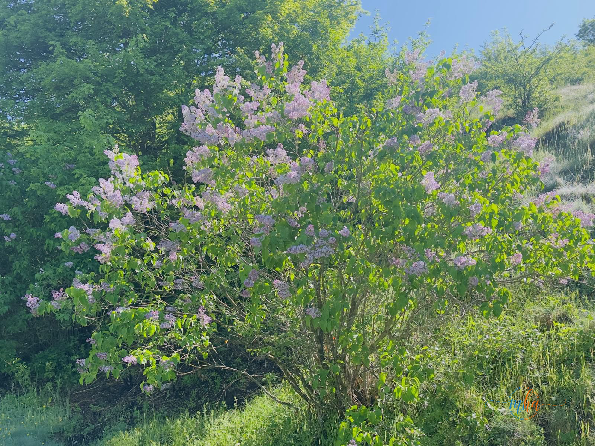
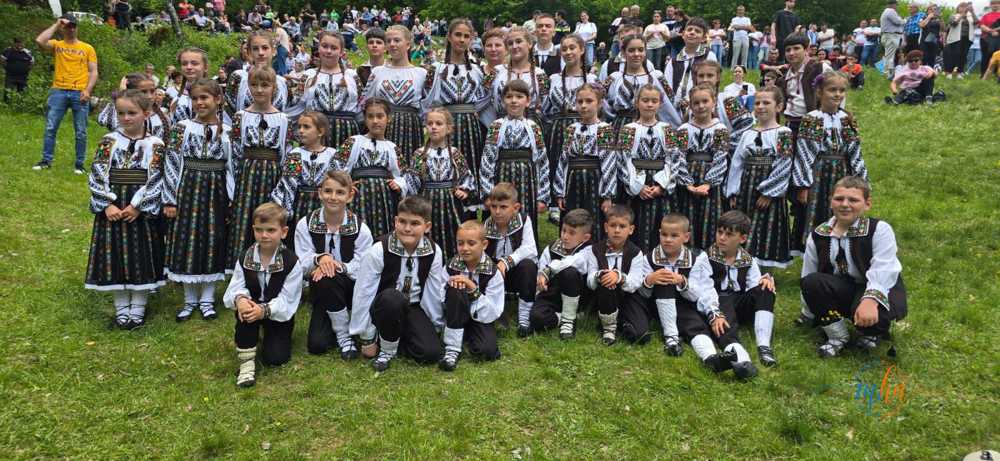
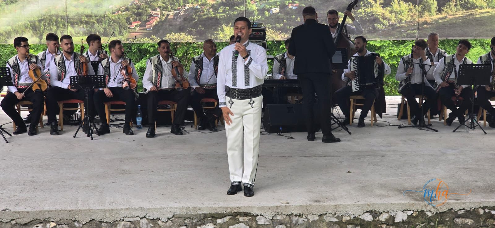
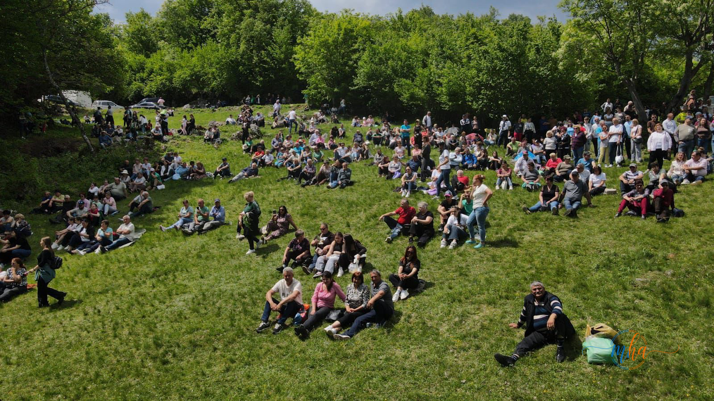
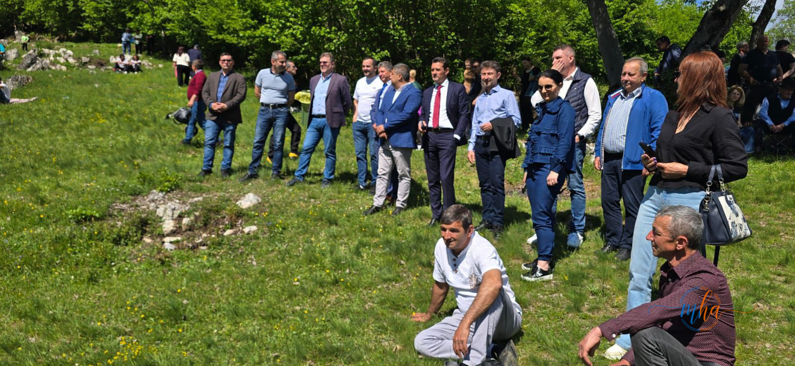
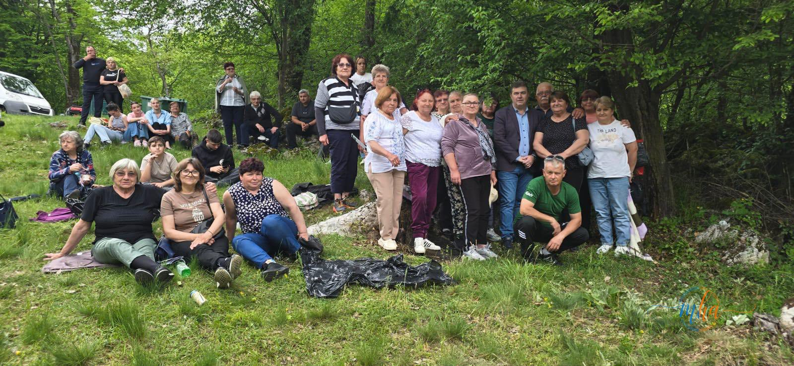

Comuna Ponoarele a fost, și în acest an, gazda uneia dintre cele mai frumoase și reprezentative manifestări tradiționale din județul Mehedinți — „Sărbătoarea Liliacului", eveniment care a adunat sute de participanți veniți să se bucure de frumusețea naturii, de tradițiile locului și de atmosfera autentic românească.
Într-un decor spectaculos, oferit de liliacul aflat în plină floare și de peisajele deosebite ale zonei, ediția din 2026 s-a desfășurat într-o atmosferă de sărbătoare întreținută de muzică, voie bună și preparate tradiționale specifice zonei. Priveliștea oferită de tufișurile înflorite de liliac, cu nuanțele lor delicate de mov și alb, a transformat întreaga zonă într-un adevărat loc de poveste.
🌸 Sărbătoarea Liliacului 2026 — Ponoarele
| Locație | Comuna Ponoarele, Mehedinți |
| Organizatori | Primăria Ponoarele + CL Ponoarele |
| Parteneri | Centrul Cultural „Nichita Stănescu" |
| Ansamblu | Ansamblul „Doina Mehedințiului" |
| Patronaj | Consiliul Județean Mehedinți |
| Intrare | Liberă |
Organizatori și parteneri — tradiție păstrată cu grijă
Evenimentul a fost organizat de Primăria și Consiliul Local Ponoarele, alături de Centrul Cultural „Nichita Stănescu", instituții care continuă să susțină și să promoveze tradițiile locale și valorile culturale ale județului. Implicarea autorităților locale și a instituțiilor de cultură confirmă importanța acordată acestei manifestări în calendarul anual al comunității.

Liliacul în plină floare la Ponoarele — decorul natural al Sărbătorii Liliacului 2026 | Foto: MehedintiAzi.ro
Spectacol folcloric cu artiști consacrați și Ansamblul Doina Mehedințiului
Pe scena amenajată pentru această sărbătoare au urcat artiști consacrați ai muzicii populare, apreciați de publicul prezent, dar și Ansamblul „Doina Mehedințiului", aflat sub patronajul Consiliului Județean Mehedinți, care a oferit un spectacol deosebit prin cântec, dans și costume tradiționale autentice.
Momentele artistice au pus în valoare bogăția folclorului mehedințean, cu melodii și jocuri populare transmise din generație în generație. Costumele populare impresionante, broderia fină și precizia în dans au demonstrat încă o dată că tradiția vie a județului este în mâini bune.

Tineri dansatori în costume tradiționale — viitorul folclorului mehedințean | Foto: MehedintiAzi.ro

Artist invitat pe scena Sărbătorii Liliacului 2026 | Foto: MehedintiAzi.ro
Sute de participanți din tot județul și oficialități prezente
Participanții s-au bucurat de o zi dedicată tradițiilor și frumuseților locale, iar parfumul liliacului înflorit a completat atmosfera de sărbătoare. Vremea favorabilă a contribuit la reușita evenimentului, care a adunat oameni de toate vârstele — familii cu copii, tineri dornici să descopere tradițiile și persoane în vârstă care și-au regăsit locul copilăriei în aceste manifestări.

Sute de participanți adunați pe coline la Sărbătoarea Liliacului 2026 — Ponoarele, Mehedinți | Foto: MehedintiAzi.ro
Alături de localnici și turiști, la eveniment au participat și reprezentanți ai autorităților din județ, prezența acestora subliniind importanța manifestării ca eveniment cultural de referință pentru nordul Mehedinților.

Reprezentanți ai autorităților județene și locale la eveniment | Foto: MehedintiAzi.ro

Participanți la Sărbătoarea Liliacului — comunitate și voie bună | Foto: MehedintiAzi.ro
„Sărbătoarea Liliacului confirmă, încă o dată, faptul că Mehedinți rămâne un județ al tradițiilor vii, al oamenilor gospodari și al locurilor cu un potențial turistic și cultural deosebit."
Ponoarele — un simbol al tradițiilor mehedințene
Organizatorii au transmis mulțumiri tuturor celor implicați în pregătirea și desfășurarea sărbătorii, subliniind importanța păstrării și promovării tradițiilor autentice mehedințene. Evenimentul rămâne una dintre cele mai importante manifestări cultural-artistice din nordul județului, un reper stabil în calendarul cultural al comunității.
„Sărbătoarea Liliacului" de la Ponoarele este mai mult decât un simplu festival — este o afirmare a identității culturale a zonei și o invitație adresată tuturor celor care doresc să descopere Mehedinți autentic: cu tradițiile sale, cu oamenii săi și cu natura sa de o frumusețe aparte. Liliacul înflorit, parfumul său discret și muzica populară autentică se împletesc, an de an, într-o sărbătoare unică.